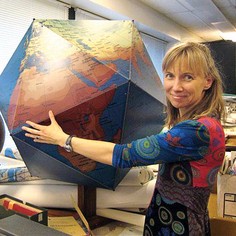

Invited Speakers

Dr. Pascal Hitzler
University Distinguished Professor, Kansas State University, USA
Title: MOMo's Journey: Addressing Knowledge Acquisition
Abstract
University Distinguished Professor, Kansas State University, USA
Title: MOMo's Journey: Addressing Knowledge Acquisition
Abstract
MOMo - Modular Ontology Modeling - is an ontology (and by extension: knowledge graph) design methodology that incorporates as important principles a wide range of methods that have evolved out of a quarter century of Semantic Web research. This includes strong axiomatization with formal logic, design patterns, modularity, capturing of human conceptualizations, visual collaborative modeling in a diverse team, vocabulary and documentation guidelines, etc. In addition, from its inception MOMo was designed to be a Knowledge Graph and Ontology Engineering approach that is amenable for partial automation. In this presentation, we will talk about the principles that lead to MOMo and are incorporated in it, as well as recent progress regarding the use of LLMs for assisting in Knowledge Graph and Ontology Engineering.
Bio
Pascal Hitzler is University Distinguished Professor and endowed Lloyd T. Smith Creativity in Engineering Chair at the Department of Computer Science at Kansas State University, one of the Directors of the Institute for Digital Agriculture and Advanced Analytics (ID3A), and Director of the Center for Artificial Intelligence and Data Science (CAIDS) Until July 2019 he was endowed NCR Distinguished Professor, Brage Golding Distinguished Professor of Research, and Director of Data Science at the Department of Computer Science and Engineering at Wright State University in Dayton, Ohio, U.S.A. He is director of the Data Semantics (DaSe) Lab. From 2004 to 2009, he was Akademischer Rat at the Institute for Applied Informatics and Formal Description Methods (AIFB) at the University of Karlsruhe in Germany, and from 2001 to 2004 he was postdoctoral researcher at the Artificial Intelligence institute at TU Dresden in Germany. In 2001 he obtained a PhD in Mathematics from the National University of Ireland, University College Cork, and in 1998 a Diplom (Master equivalent) in Mathematics from the University of Tübingen in Germany. His research record lists over 400 publications in such diverse areas as neuro-symbolic artificial intelligence, semantic web, knowledge graphs, knowledge representation and reasoning, denotational semantics, and set-theoretic topology. His research is highly cited. He was founding Editor-in-chief of the Semantic Web journal, the leading journal in the field, and is founding Editor-in-chief of the new Neurosymbolic Artificial Intelligence journal, and of the IOS Press book series Studies on the Semantic Web. He is co-author of the W3C Recommendation OWL 2 Primer, and of the book Foundations of Semantic Web Technologies by CRC Press, 2010, which was named as one out of seven Outstanding Academic Titles 2010 in Information and Computer Science by the American Library Association's Choice Magazine, and has translations into German and Chinese. He is on the editorial board of several journals and book series and a founding steering committee member of the Neural-Symbolic Learning and Reasoning Association and the Association for Ontology Design and Patterns, and he frequently acts as conference chair in various functions. For more information about him, see http://www.pascal-hitzler.de.

Dr. Katy Börner
Victor H. Yngve Distinguished Professor of Engineering and Information Science, Indiana University, USA
Title: Actionable Data Visualizations
Abstract
Victor H. Yngve Distinguished Professor of Engineering and Information Science, Indiana University, USA
Title: Actionable Data Visualizations
Abstract
Envisioning and implementing desirable futures requires a deep understanding of developments in science and technology as well as the ability to both simulate and communicate the likely impact of alternative actions. At a time when our relationship to a vulnerable planet Earth is especially important, such a profound awareness of complex, interlinked systems is needed more than ever. Atlas of Forecasts, from the creator of Atlas of Science and Atlas of Knowledge shows how we can use data to map possible futures. Börner’s Atlas of Forecasts uses advanced data visualizations to introduce different types of computational models, and it demonstrates how model results can be used to inform effective decision-making. The models aim to capture the structure and dynamics of developments in education and the job market, progress in science and technology, and the impact of government policies—all from the micro to the macro levels. Model results can help us decide which human skills are needed in an artificial intelligence–empowered economy; which courses and degrees are most effective in upskilling and reskilling the current and future workforce; what progress in science and technology is likely to happen; and how policymakers can future-proof regions or nations. This Atlas offers a driver’s seat-perspective for a test-drive of the future. In October 2025, the Atlas of Macroscopes: Interactive Data Visualizations will become available in stores around the globe. Transcending the static nature of the maps featured in the initial trilogy, macroscopes, or interactive data visualizations, give us holistic views of complex systems or networks. They provide an entry point for scientists and laypeople alike and empower us to engage directly with large datasets and to conduct our own lines of questioning. As portals to continuously evolving data, macroscopes can serve as windows to the dynamics of any terrain—personal or professional, local or global—and offer key insights into our surroundings and even our place in the universe.
Bio
KATY BÖRNER is the Victor H. Yngve Distinguished Professor of Engineering and Information Science in the Departments of Intelligent Systems Engineering and Information Science, Luddy School of Informatics, Computing, and Engineering; core faculty of the Cognitive Science Program; and founding director of the Cyberinfrastructure for Network Science Center (http://cns.iu.edu)—all at Indiana University in Bloomington, Indiana. She is a curator of the Mapping Science exhibit (http://scimaps.org) and she leads the international Human Reference Atlas effort (https://humanatlas.io). She holds an MS in electrical engineering from the University of Technology in Leipzig, and a PhD in computer science from the University of Kaiserslautern. Börner is a Fellow of the American Association for the Advancement of Science (AAAS), a Humboldt Research Fellow, an Association for Computing Machinery (ACM) Fellow, Network Society Fellow, and a Stiftung Charité Visiting Fellow.